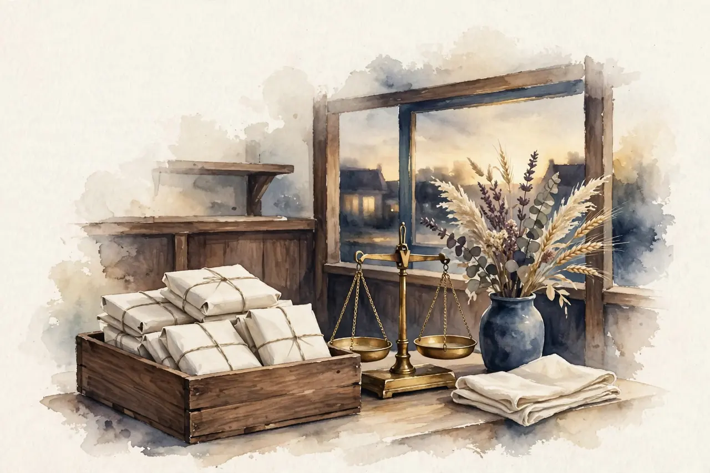

A quieter screen can be a better place to play
A puzzle may ask you to notice one small detail. A moving banner, a surprise sound or a second instruction can pull you somewhere else. Sometimes the most helpful change is not trying harder. It is making the task easier to see and follow.
Not all extra information is the same
A research review describes how distraction can affect older adults' performance on tasks involving reading, remembering and problem solving. Irrelevant information can interfere with the task. But the review also describes cases where additional information that matches the task can help. [1]
That distinction matters for design. A label beside a game piece may support the task. An unrelated flashing message does not. The review is about a range of experimental findings; it does not mean every older adult is equally distractible or that removing one animation improves health.
Reduce the competition for attention
For comfortable play, try one clear goal at a time. Keep the instructions available near the board. If sound is optional, choose the setting you prefer. Pause before moving away from the game so you can return without losing your place.
These are comfort suggestions, not clinical instructions. You do not need an empty room or perfect concentration to deserve a pleasant game.
For a visual search game, the target could stay visible while you find matching objects on a small shelf. Its label could include both a shape and a word, so color is not the only clue. Later rounds could add more objects if you want a harder puzzle. They should not add unrelated pop-ups to manufacture difficulty.
A difficult search round measures the choices you made under those game rules. It is not a vision test, an attention diagnosis or a measure of whether you can safely drive.
The bottom line: Clear cues and fewer irrelevant demands can make a game more comfortable. A clean screen is a design choice, not a medical intervention.
Sources
- Weeks JC, Hasher L. The disruptive and beneficial effects of distraction on older adults' cognitive performance. Frontiers in Psychology, 2014. Full review read. https://pmc.ncbi.nlm.nih.gov/articles/PMC3927084/
← Back to the games · All articles · About · Privacy policy · Photo credits · Cookie settings